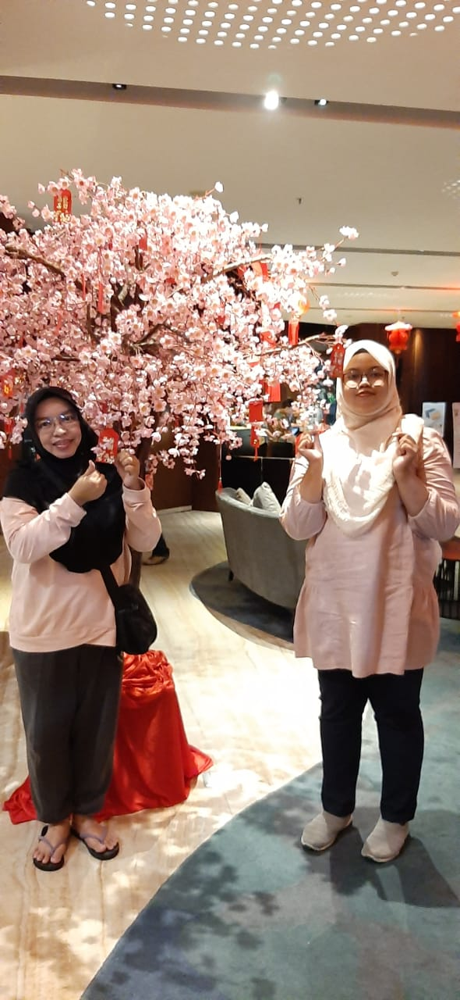

Post 1
Kami pergi jalan-jalan ke SCP. Awalnya kami tidak mau keluar duit, berakhir ke fotobooth karena saat itu event foto dengan frame SEVENTEEN. (◍•ᴗ•◍)
Post 2
Ini foto saat perpisahan SMP saya ditahun 2019. Saat itu Saya minta difotokan dengan teman saya, sayangnya mungkin karena resolusi hp pada saat itu masih kurang bagus, jadi hasilnya cukup buram. ˚‧º·(˚ ˃̣̣̥⌓˂̣̣̥ )‧º·˚
Post 3
Saat itu kami sedang pergi ke kotabangun untuk jalan-jalan. terakhir sebelum pulang kerumah, kami mampir ke RSUD disana. saat itu bangunannya baru dibuka, jadi kami menyempatkan mampir untuk berfoto. (❁'◡'❁)
Post 4
Saya tidak ingat, tetapi mungkin sekitar kelas 4 SD. Saat itu, Saya mengikuti salah satu ilmu bela diri, namanya Shorinji Kempo. Difoto ini saya baru masuk sabuk kuning dan 2. Ibu saya menyuruh saya memperagakan salah satu gerakan dan difoto untuk menjadi kenang-kenangan. (〃^ω^〃)

My FavSong Hehehe (≧∇≦)/
Post 5

Ini foto saat kami dihotel. Sembari menunggu Tante dan Om yang sedang bersiaap-siap, kami menyempatkan untuk foto bersama. (˵ ͡° ͜ʖ ͡°˵)
Post 6


Saat itu kami sudah merencanakan ingin bermain bulutangkis. Sayangnya banyak yang tidak ikut karena hujan dan lain-lain. kami bermain juga hanya sebentar saja karena lewat dari jam yang dijadwalkan.Tetapi tetap seru, next time semoga kami bisa bermain dengan yang lainnya juga. ( ͡°з ͡°)
Post 7

Foto ini diambil saat kami buka bersama dihari sabtu minggu lalu. Yang mengambil foto saya adalah sela. Sebenarnya saya cukup malu difotokan oleh orang lain, karena saya setiap difoto saya selalu mati gaya. ಥ_ಥ

Post 8
Ini malam terakhir kami sebelum kembali mudik ke loleng. Kebetulan saat itu sepertinya sudah dekat dengan Chinese New year, jadi di lobby hotel tersebut ada pohon sakura dengan berbagai gantungan kertas merah (saya tidak tau itu apa). ᐠ( ᐛ )ᐟ
